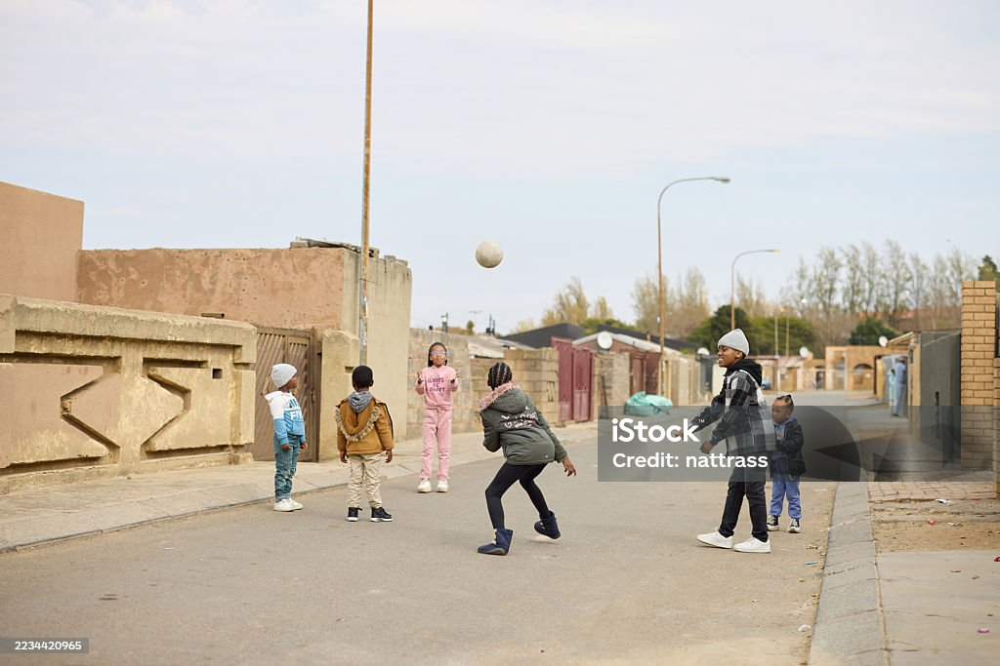
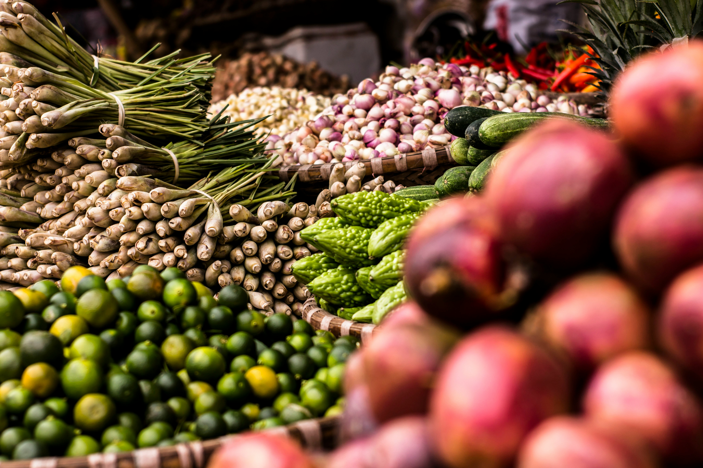
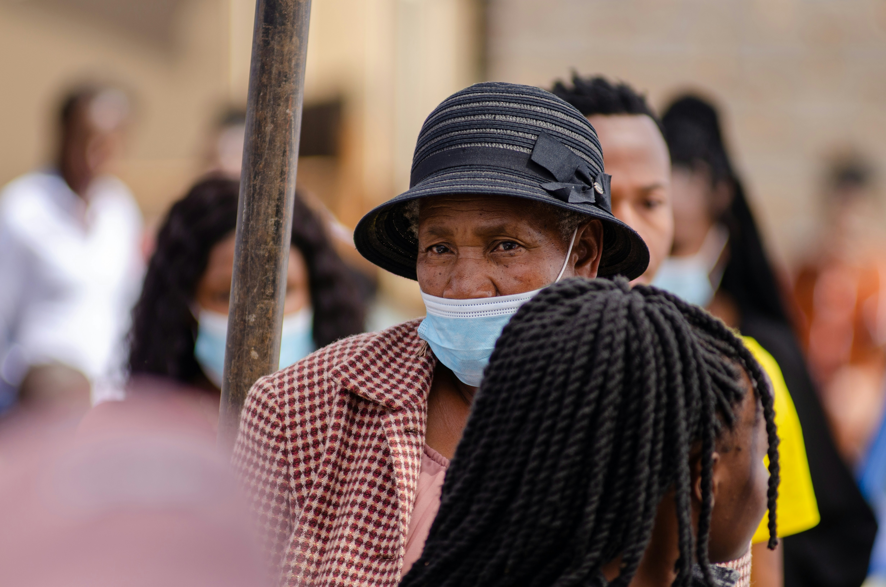
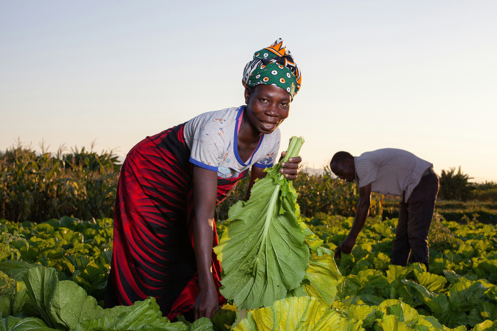

Our Services
At the Kolisi Foundation, we are dedicated to making a positive impact in our communities through a variety of services. Our initiatives focus on education, health, and community development. We offer programs that provide educational support to underprivileged children, healthcare services to those in need, and community development projects that empower individuals and families.
| Service Area | Description | Involved | ||
|---|---|---|---|---|
 |
Education & Sports | We provide educational support and sports programs to underprivileged children, focusing on skill development and academic achievement. | Local schools and community centers | Get Involved |
 |
Food Security | We work to address food insecurity in our communities by providing nutrition education, supporting local food banks, and promoting sustainable agriculture practices. | Local food banks and agricultural cooperatives | Get Involved |
 |
Gender-Based Violence | We are committed to addressing gender-based violence in our communities through awareness campaigns, support services, and advocacy efforts. | Local women's shelters and support organizations | Get Involved |
 |
Food Gardens | We promote food security and sustainable agriculture by supporting the development of community food gardens. | Local community centers and agricultural organizations | Get Involved |
How your Support Helps
- Volunteering-Your time and skills can make a significant impact on our programs and the communities we serve. Get Involved
- Donations-Your financial support helps us to fund our programs and reach more people in need. Get Involved
- Partnerships-Collaborate with us to create meaningful change in our communities. Get Involved